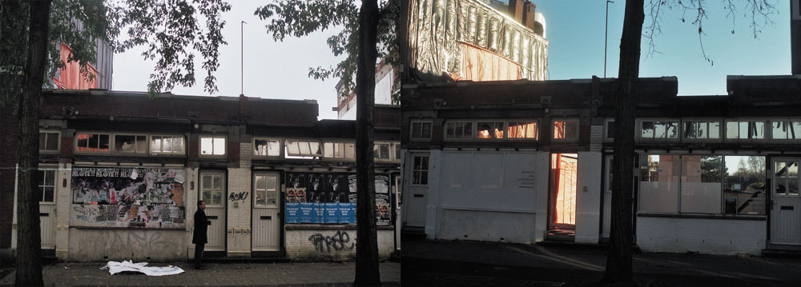
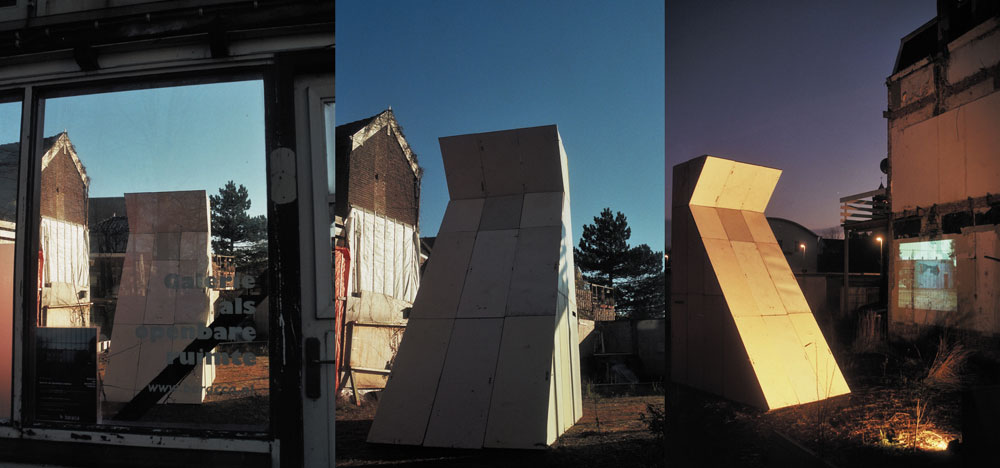
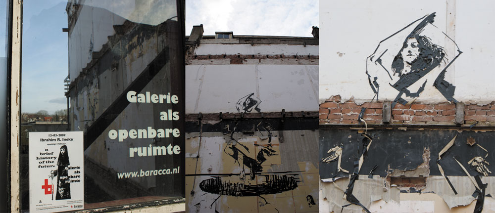
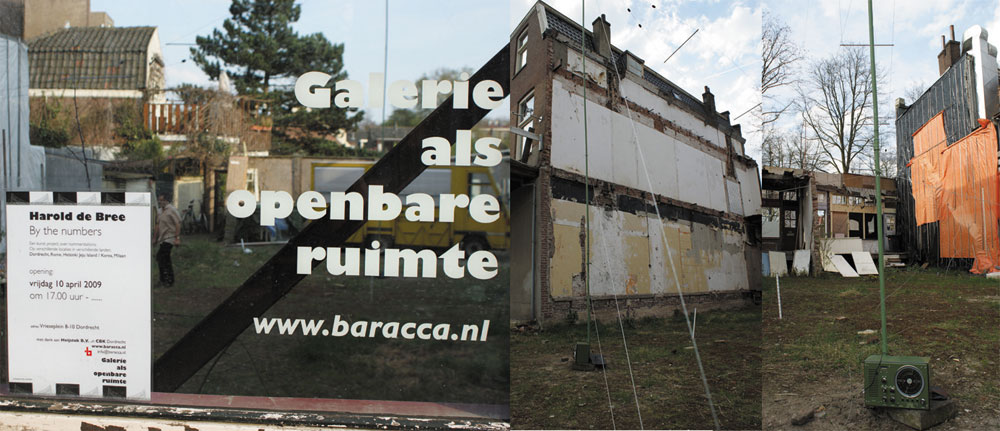
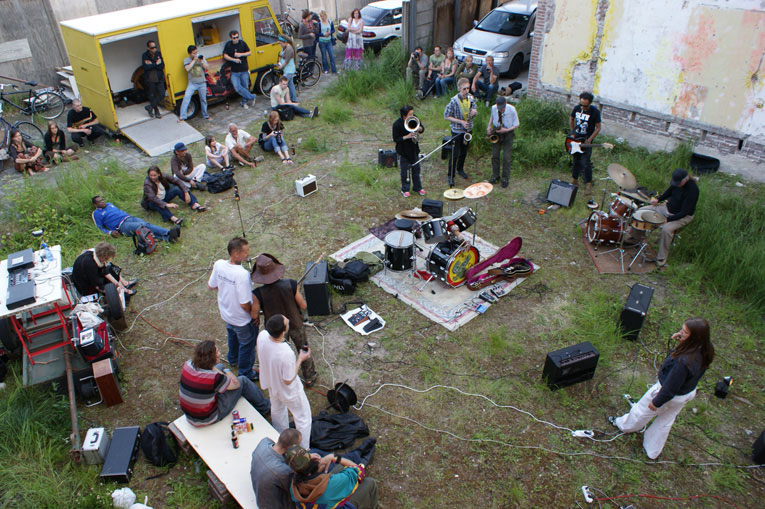
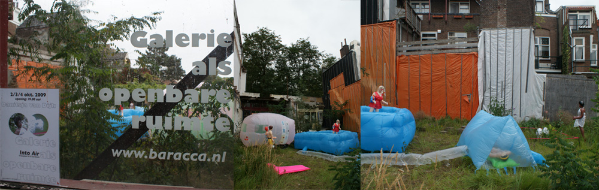

| < vorige | Terug naar overzicht |
Galerie als openbare ruimte/ Gallery as public space [Baracca Dordrecht] / 2008 - 2010
expo#9 11 maart 2010 installatie Yvo van der Vat Mijn EGO zonder harde L
expo#8 2 okt. 2009 installatie Danitsja van Dijk Into Air
expo#7 31 mei 2009 geluidperformance The Outskirts i.s.m. Rotterdam Free Jazz Collective & Romeo Major
sound & film: Jan en Bejank
expo#6 30 mei 2009 verf installatie Denis Oudendijk & Thomas Trum
expo#5 10 april 2009 installatie Harold de Bree By the numbers
expo#4 13 maart 2009 installlatie Yvo van der Vat Represents
expo#3 13 maart 2009 Installatie John Fanning and Glenn Dilando a.k.a. TrillHaus, Portsmouth The worst 1-Euro Store in the world
expo#2 13 maart 2009 Tape tekening Ibrahim R.Ineke A brief history of the future
expo#1 4 dec. 2008 installatie met geluid en film Yvo van der Vat & Martin Vink The last time I saw Myspace was on internet
foto's:
Galerie als openbare ruimte voor en na
Opening expositie Yvo van der Vat & Martin Vink
Werk Ibrahim R. Ineke
Werk Harold de Bree
Overzicht geluidperformance The Outskirts i.s.m. Rotterdam Free Jazz Collective
www.baracca.nl >





